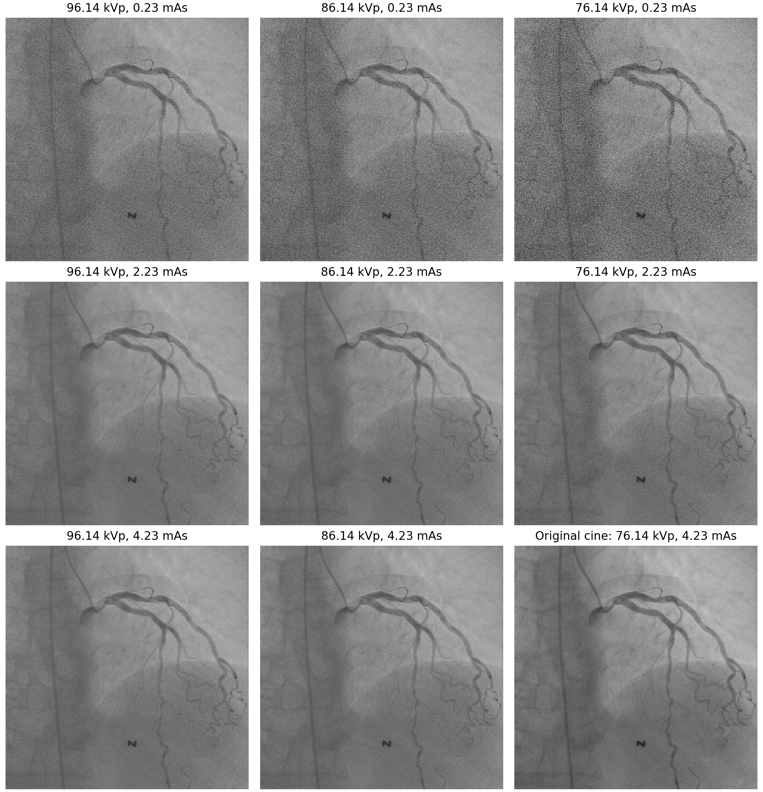

Fluoroscopy to Cine
Generative Restoration for Low-dose Coronary Angiography
SNUBH Coronary Artery AI Team1,2
1Cardiovascular Center, Seoul National University Bundang Hospital, Korea
2Seoul National University, Korea
Contacts: Sang-Kyun Ko, Si-Hyuck Kang*
